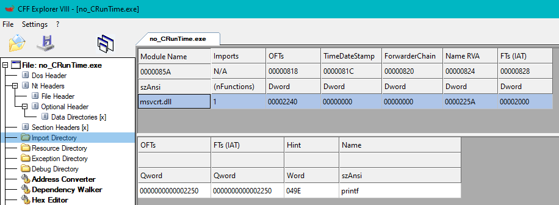

# Use Custom & Static CRT - msvcrt.dll
The CRT library - the C runtime library - implements the core functionality of the C programming language.
The Visual Studio compiler flags
/MT and
/MTd statically link the CRT library into your finished binary.
If not statically linked, your binary will dynamically link against the Visual C++ runtime library that came with your Visual Studio install at runtime. This is ok for you, and your program will run, but it will render your executable non-portable as other systems (most likely) won't have this library installed and the binary will fail to run.
When Visual Studio statically links the
*crt.lib libraries against your binary it dramatically increases the size.
Malware needs to be small and portable.
msvcrt.dll is a copy of the C runtime library that exists on every Windows system since 95.
For programs using the CRT, you can drastically decrease the size of your binary by creating a custom version of the
msvcrt.dll which contains just the function exports. This kills a lot of functionality in the CRT (security checks, CRT initialisation, etc.) but you can use its exported functions (printf, memcpy, etc.)
Technique (All credit goes here)
•
https://0xpat.github.io/Malware_development_part_4/#c-runtime-library-mt•
https://stackoverflow.com/questions/437685/reduce-windows-executable-size/39737730#39737730•
https://www.solomonsklash.io/smaller-c-payloads-on-windows.html ◇
https://gist.github.com/SolomonSklash/fc02b48a7a70ecb1508977a8e41d43e5## Create custom msvcrt.dll
https://gist.github.com/SolomonSklash/fc02b48a7a70ecb1508977a8e41d43e5 <-- All credit here!
To create an x64 version, use
C:\Windows\System32\msvcrt.dll from a 64bit Windows install
For x86, use
C:\Windows\SysWOW64\msvcrt.dll from a 64bit Windows install
# On Windows, within a VS developer prompt
# -----------------------------------------------
# Dump the exports of msvcrt.dll
dumpbin.exe /exports C:\Windows\System32\msvcrt.dll > msvcrt.txt
# Linux (copy msvcrt.txt to a Linux box)
# -----------------------------------------------
# Convert the file to Unix line endings
dos2unix msvcrt.txt
# Remove the header from dumpbin
sed -i '1,19d' msvcrt.txt
# Create msvcrt.def file and add the required "EXPORTS" line to the beginning
echo "EXPORTS" > msvcrt.def
# Get the list of functions and remove everything else, redirecting it to the .def file
awk '{print $4}' msvcrt.txt | sed '/^[[:space:]]*$/d' >> msvcrt.def
# Windows (copy msvcrt.def to Windows in a developer prompt)
# -----------------------------------------------
# Create a .lib file from the .def file
lib.exe /def:msvcrt.def /out:msvcrt.lib /machine:x64 # x64
lib.exe /def:msvcrt.def /out:msvcrt.lib /machine:x86 # x86 (might get errors)
## Visual Studio Options
• Linker settings:
◇ Advanced -> Entrypoint -> something other than main/wmain/WinMain etc. (I'm using
tinymain())
◇ Input -> Ignore All Default Libraries -> YES
◇ Input -> Additional Dependencies -> add the custom msvcrt.lib path,
• Compiler settings:
◇ Code Generation -> Runtime Library -> /MT
◇ Code Generation -> /GS- (off)
◇ Advanced -> Compile As -> /TC (only if you’re using C and not C++)
◇ All Options -> Basic Runtime Checks -> Default
Alternatively use the command line:
cl.exe /MT /GS- /Tc myfile.c /link C:\path\to\msvcrt.lib "kernel32.lib" "ntdll.lib" /ENTRY:"YourEntrypointFunction" /NODEFAULTLIB## Demo
#define _NO_CRT_STDIO_INLINE
#include <stdio.h>
int tinymain(void)
{
printf("Hello compiler options :) \n");
return 0;
}
Compiling as Release x64.
My file size is 4kb (compared to the 8/9kb it normally is)
It runs.
And the only function we've imported is
printf. No extra CRT functions are present.
## Problems
The standard CRT implements a lot of stuff (security checks, CRT initialisation before main(), etc.)
By using a custom CRT, you remove a lot of features (but can use its exported functions).
main or
WinMain entrypoints are used by the CRT.
Without the full CRT included, you can't use these function names as entry points.
The CRT performs buffer overflow checks (amongst others).
Therefore, you need to disable Security Checks in the compiler options -
/GS-The CRT handles command line arguments (argc, argv, etc.)
To use command line arguments with the custom CRT, use
CommandLineToArgv